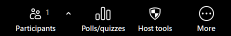

Focus Mode - What It Is
Focus mode is designed for the digital learning environment. It allows students to stay attentive without being distracted by other participants.
- The host and co-hosts can see ALL participants' videos.
- Participants can only see their OWN video, not each other's.
- Screen sharing: host/co-host can view and switch between each participant's shared screen; participants see only their own content.
- The host can share a participant's screen with everyone if needed.
How to enable Focus Mode in your Zoom account
- Sign in to the Zoom web portal as an admin.
- Go to Account Management → Account Settings.
- Click the Meeting tab.
- Under "In Meeting (Advanced)", toggle Focus Mode ON.
- If a verification dialog appears, click Enable to confirm.
- (Optional) Check "Allow host to enable focus mode when scheduling" and click Save - this lets meetings start with Focus Mode active.
- (Optional) Click the lock icon to make this mandatory for all users.
Step 2 - Pin the Host tools button to the Zoom tool bar
The app switches Focus mode on through Zoom's Host tools button (Host tools → Advanced → Focus mode), so that button must be visible in the Zoom tool bar.
- In the meeting tool bar, click More (...).
- Drag Host tools from the More menu into the tool bar. The More menu says "Drag to pin or remove from Tool bar" at the bottom.
- Keep the Zoom window big enough that Participants, Polls/quizzes and Host tools are not hidden behind "More".

Using the Focus button
- Click Focus once. The app opens Host tools → Advanced and switches "Focus mode" on (or off if it is already on). This takes about 10-15 seconds.
- The button is orange ("Working...") while it runs, then green when Focus mode is ON and grey when it is OFF.
- For one moment the app clicks the "Advanced" header with the mouse (the pointer then returns to where it was). Keep the mouse still while it works.
- After you turn Focus mode OFF, Zoom needs about a minute before it can be turned ON again (the app shows "Wait ..s").
- If Focus mode was already ON when the app started, the button first shows OFF. Click it once and it syncs to ON; click again to turn it OFF.
Auto start FM
Tick Auto start FM and set the seconds before the meeting starts. Focus mode needs 10-15 seconds, so give it its own slot (for example 60 seconds or more) and keep the other auto actions (Mute, Camera, Unmute) outside that window. Do not touch the mouse while it runs.
Next to the setting, a green hint reminds you to add the Host tools button to the Zoom tool bar.
Reminder to turn Focus mode off
When Focus mode has been ON for 105 minutes, the Focus button flashes red and a reminder window opens: turn Focus mode OFF so participants can see each other again after the meeting. Turning Focus mode OFF in the app cancels the reminder.
The 105 minutes is the FocusReminderMinutes value in
%APPDATA%\JWL-OBS-Assistant\settings.json (close the app before editing it).